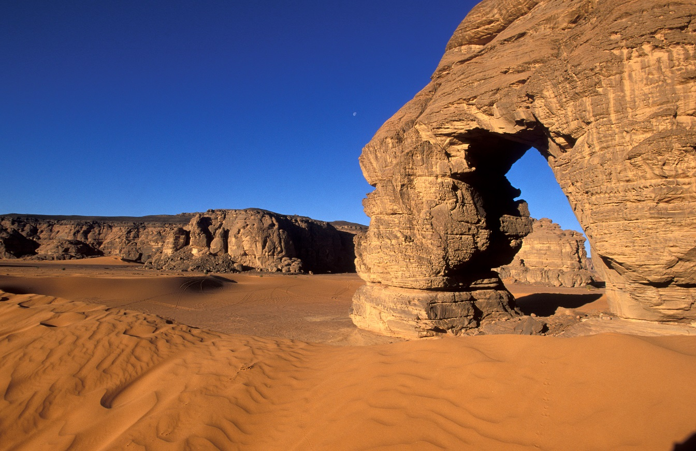
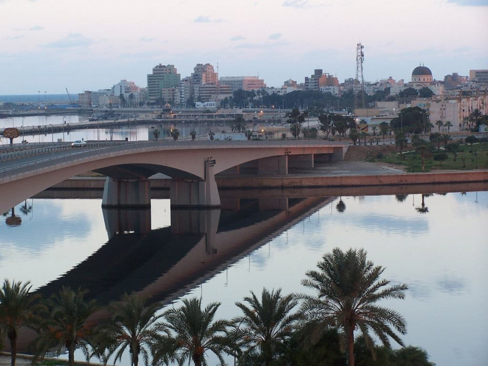

-

Tripoli
Tripoli is the capital of Libya as well as the largest city. You will locate this city in the northwestern part of the country close to the great Libyan Desert.Tripoli is one of the most beautiful places to visit in the country.
-

Tadrart Acacus
Tadrart Acacus is also called the Acacus Mountains by a few people. You will see a lot of rock craft and hole compositions made in various sizes and styles. To show you how famous it is and why it is a must-visit for every Libya tourist, UNESCO considered it a World Heritage Site. This area greatly tampered with people who wanted to carry out underneath petroleum reserves exploitation.
-

Benghazi
The only city bigger than Benghazi in Libya is Tripoli, which is the capital of the country. Benghazi was once the capital of Libya together with Tripoli. This led to real head-ways towards the progress and growth of the city. As of present, the city is the capital of the Cyrenaica area.
-

Leptis Magna
Phoenicians established BC Leptis Magna, the largest city of old Rome in the 10th century. It was, however, changed to a Punic city. In Leptis Magna, the theatre was one of the only structures left behind after the city was destroyed. You will also see the Hadrianic Baths, which is among the largest showers assembled by Rome.
-
Cyrene
Cyrene is one of the best places in Libya and the most seasoned Greek urban community. The country's traditional name, "Cyrenaica" was taken from it. In 630 BC, this place was a settlement for the Greeks. However, in 96 BC, it turned into a Roman city.
-
Gharyan
Gharyan is a city in northwestern Libya, in Jabal al Gharbi District, located 80 km south of Tripoli.[3] Prior to 2007, it was the administrative seat of Gharyan District. Gharyan is one of the largest towns in the Western Mountains.
-

Ghadames
In Ghadames, Libya, there are numerous sights to view. This Berber oasis town is found in the Tripolitania region's Nalut District, in the country's northwestern corner. The city is a great place to visit if you want to get away from the hustle and bustle of the city. This article will provide you with a quick overview of the town
-
Waddan
Visiting the Waddan city requires some planning. The city is quite small in size. The population density is extremely low, and many roads are unpaved. The neighborhood, on the other hand, is steeped in history and offers numerous attractions. To begin with, the Al Waddan Hotel is located in the heart of the city, just a few miles from the Marcus Aurelius Arch.
-
Msallata
Msallata, Libya's third-largest city, is the place to go if you want to see the best of the country. Several significant locations can be found in this area. Visiting Msallata allows you to see some of the region's most magnificent scenery. Waddan Castle, a historic landmark erected by the Arab monarchs of the Maghreb, is one of Msallata's UNESCO World Heritage Sites. Msallata is notable for its palm groves, markets, and tranquil setting.
-
Sabratha
Sabratha, an ancient Greek city, is located on the Mediterranean Sea coast of Libya. It was the third city constructed by the Phoenicians and one of the three cities of ancient Tripolis. It was a thriving Roman town by the third century AD. A large amphitheater, three glorious temples, an old Christian church from Justinian's reign, and Roman baths are among the city's remarkable architecture today. This is another UNESCO World Heritage Site.